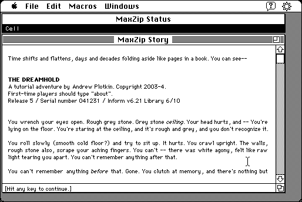

Download
MaxZip-178.zip (147K) MaxZip 1.7.8 repackaged into a zipped hfs disk image and checksum file. The disk image can be mounted with Mini vMac.
MaxZip-178.hqx (197K) MaxZip 1.7.8 in the original format.
copyright: Andrew Plotkin, and others
mod date: Oct 19, 2000
license: Freeware
official url :
MaxZip 1.7.8 -- An Macintosh interface for text adventures
“Interpreter for Z-code text adventures.” It can also “build a stand-alone Macintosh executable from a Z-code file.” (Adventures written in the Inform programming language can be compiled into Z-code using the Inform compiler.) Requires System 7. Source code is available (below).

Download Source
MaxZip-src-178.zip (164K) MaxZip 1.7.8 source repackaged into a zipped hfs disk image and checksum file. The disk image can be mounted with Mini vMac.
MaxZip-src-178.hqx (229K) MaxZip 1.7.8 source in the original format.
If you find these downloads useful, please consider helping the Gryphel Project, which hosts them.
Here are the md5 checksums for the downloads, signed with Gryphel Key 5:
--------- GRY SIGNED TEXT --------- 102eb7aec4e5a3d62a445fdc29840787 MaxZip-178.zip 86b9bde0829bfa13801df3f193a2581a MaxZip-178.hqx af8a722e11be0fe3333c32ebe8b8c10c MaxZip-src-178.zip e4f6b8193e1293c1ef407fc19ef84162 MaxZip-src-178.hqx ------- BEGIN GRY SIGNATURE ------- Gry/4Xa8CFcUzxdN/Bm1TTfqJdXzKyM+56mBDRrt9UuowPBbwssDjWvYj+9cKO2B 7SYBoNNC+QVs7N11lJB2QpE2rQMIPuBmr4wkNy61DsegNNXs0HWMQx0Ow2IBGafK y+bcGP4TDYZiggRWMaE0OiscdtpAwIX5X1QfVy2Vn3D0br8F8+mSGjDw7M+ek2SD -------- END GRY SIGNATURE --------